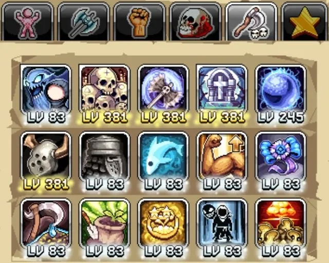
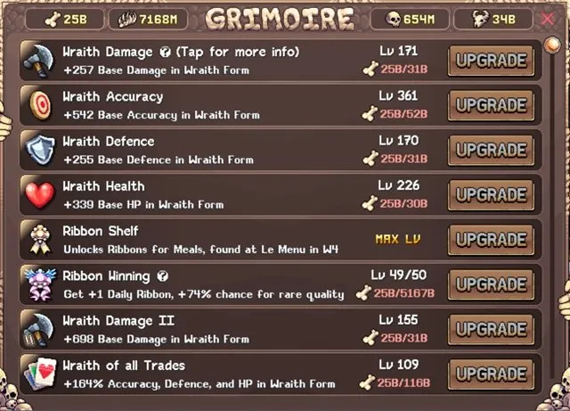
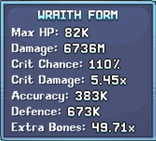
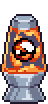
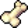
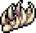
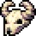
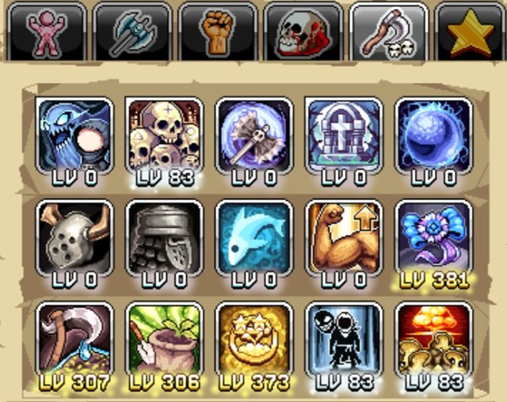
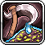
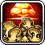

Death Bringer Wraith Form과 World 6 파밍을 마스터하기 위한 권장 탤런트 빌드와 진행 가이드입니다. 뼈 화폐(bone currency)를 파밍하는 팁과 전략, 최적의 맵, 그리고 이 마스터 클래스의 강력한 계정 혜택을 잠금 해제하기 위한 Wraith Form 활용법도 포함되어 있습니다. 최대 효과를 위해 Barbarian 빌드 및 다른 Idleon 클래스 빌드와 함께 참고하세요.
데미지 (Wraith Form) 빌드

Wraith Form에서 뼈 파밍이나 캐릭터 레벨을 위한 Active(직접 플레이) 게임플레이를 위해 Wraith Form 보너스를 향상시키는 탤런트와 처치 효율을 높이는 공격 탤런트에 집중하세요.
모든 Death Bringer(DB) 탤런트가 유용한 유틸리티를 가지고 있으므로, 남은 포인트를 핵심 탤런트에 투자하기 전에 모든 탤런트에 1포인트씩 투자하는 것을 권장합니다. 이렇게 하면 1포인트가 수십 포인트로 전환되는 탤런트 레벨 보너스가 활성화됩니다:
| 탤런트 | 효과 | 설명 |
|---|---|---|
| Graveyard Shift | 무리(Horde)를 소환하고, 발견되는 뼈 +%, 몹 리스폰 속도 증가 | Active(직접 플레이) 스타일을 위한 Death Bringer의 리스폰 메커니즘인 무리를 생성하는 동시에 뼈 획득과 몹 Respawn(리스폰) 속도를 높입니다. |
| Grimoire | Grimoire를 열고 발견되는 뼈 +% | 이 탤런트를 사용해 활성화되는 Grimoire UI를 통해 Death Bringer 계정 혜택을 잠금 해제하기 위한 뼈 획득을 향상시킵니다. |
| Sentinel Axes | 더 큰 도끼와 기본 공격 시 도끼 발동 | 주력 공격으로, 추가 레벨이 크기와 타격 몬스터 수를 크게 향상시키며 이전 클래스 탤런트(Fired Up, Combustion, Bear Swipe, Axe Hurl)와 결합됩니다. |
| Detonation | 무리를 처치할 때 폭발을 발동할 확률 | 트리거 확률과 범위를 늘리며 레벨 300에서 100% 트리거 확률에 도달하는 또 다른 핵심 맵 클리어 탤런트입니다. 추가 공격 범위가 크게 중요하지 않으므로 레벨 300에서 중지하세요. |
| Marauder Style | Grimoire 업그레이드 100개당 Wraith 데미지 및 Accuracy(명중률) +% | Accuracy(명중률)는 Wraith Form 진행의 주요 장벽이며, 이 탤런트가 그것을 극복하는 데 도움을 주고 추가 데미지는 좋은 이점입니다. |
라이브러리 최대 레벨, 스킬링 레벨 및 기타 계정 요소에 따라 이 핵심 탤런트들은 Death Bringer 레벨 약 600에서 최대화할 수 있습니다. 추가 탤런트 포인트는 다음 권장 순서로 투자하며, 데미지와 생존력이 주로 Grimoire UI 업그레이드에서 나오기 때문에 추가 Wraith 스탯은 낮은 우선순위입니다:
- Apocalypse Wow: 10억 몹 처치당 계정 전체 황금 음식 효과
- Dank Ranks: 땅 등급(Land Rank) 보너스 향상 (은신, 드랍률, 모든 스탯, 데미지 등 보너스 포함)
- Ribbon Winning: World 4 요리를 위한 리본
- Wraith Overlord: 계정 전체 데미지
- Wraith Form: Wraith 데미지
- Famine O' Fish: Wraith 데미지 (치명타 확률 및 데미지)
- Bulkwark Style: Wraith 생존력 (방어 및 HP)
- Built Different: Death Bringer 데미지를 위한 기본 STR
Wraith Form 팁 및 혜택
이 일반적인 Wraith Form 팁들은 Death Bringer Wraith Form 진행을 최적화합니다:
- 기도(Prayer) 제거: Wraith Form에서 적의 체력이 증가하기 때문에 Midas Minded와 Jawbreaker 기도를 캐릭터에서 제거하세요.
- 장비 선택: 낚시 효율은 Famine O' Fish 탤런트와 함께 데미지 부스트를 제공합니다. 주요 원천은 낚시 낚싯대, 낚시 신발(Angler Boots 또는 Deep Sea Galoshes), Serrated Rex Rings, Golden Ribs 및 낚시 카드입니다.
- 치유 음식: Death Bringer는 Wraith Form 초반에 생존력에 어려움을 겪으므로 여러 치유 음식을 장착하세요.
- 뼈 증가: 뼈 획득의 주요 원천은 World 5의 Gambit 지하 동굴, 은신(Sneaking) 고급 매력(Pristine Charm), 아케이드 보너스입니다.
- Graveyard Shift 배치: 묘석 위치는 뼈 생성 속도에 크게 영향을 미치며, 특히 Charred Bones를 사용할 때 이 가이드에 명시된 묘석 위치를 사용해 뼈 획득을 최대화하세요.
- Charred Bones: 이 뼈들은 Death Bringer의 AFK 메커니즘으로, 위에서 언급한 대로 묘석을 신중하게 배치하면 최대화할 수 있습니다. 이를 더욱 최적화하기 위해 묘석 쿨다운이 만료되기 직전에 Charred Bones를 사용하면서 Death Bringer를 한 묘석 주기 동안 직접 제어하여 무리 몹을 처치하고 Detonation 탤런트를 발동하세요.
- 업그레이드 균형: Marauder Style은 진행하면서 중요한 Accuracy 원천입니다. Accuracy를 우선시하되, Grimoire의 데미지 및 계정 혜택도 확인하면서 저렴할 때 다른 업그레이드도 구매하세요.
- 계정 부스트: Death Bringer Grimoire는 희귀 리본 확률, 땅 등급 부스트, 탐구록(Tome) 보너스, 더 높은 작물 보너스, 최대 식사 레벨, 마을 주민 경험치, 모든 캐릭터의 탤런트 레벨, 드랍률 등 강력한 계정 혜택을 포함합니다.

Wraith Form 월드 진행 가이드
Wraith Form의 목표는 가능한 한 높은 월드에 도달하는 것입니다. 뼈 획득량이 크게 증가하여 강력하지만 비용이 많이 드는 Grimoire 혜택을 잠금 해제할 수 있기 때문입니다.
World 1
- Wraith Form Accuracy(명중률), 체력, 데미지가 허용될 때 맵을 빠르게 진행하며 이것이 업그레이드 집중 방향입니다.
- 이 초반 빠른 진행 동안 Graveyard Shift가 생성한 무리에 집중하여 Detonation을 발동시키기 위해 Death Bringer를 직접 제어하세요.
- Femur 파밍의 초기 최적 맵은 작은 맵 레이아웃의 Green Mushrooms와 Beans입니다.
- 가능할 때 Grimoire에서 Ribbon Shelf와 Ribbon Winning을 잠금 해제하되, 초반에는 Ribbon Winning에 과도하게 투자하지 마세요. 이 뼈들은 진행 속도를 높이기 위한 Wraith Form Accuracy, 데미지, 방어, 체력에 더 잘 쓰입니다.
- 장기적인 뼈 파밍 최적 맵은 Walking Sticks(Femur)와 Nutto(Ribcage)이며, 두 맵 모두 하단 포탈이 Active 묘석 배치의 이상적인 위치입니다. 단, 이 Accuracy 요구 사항을 충족하기 전에 World 2를 진행해야 합니다.
World 2
- 계속해서 맵 진행과 Grimoire의 Wraith Form 혜택을 우선시하세요. Wraith of all Trades(Accuracy, 방어, HP %)가 이 월드에서의 주요 집중 대상이며, 이 스탯들의 기본값을 더욱 높이세요.
- World 2의 최적 뼈 파밍 맵은 증가하는 기본 뼈 드랍으로 인해 보통 현재 도달한 가장 높은 맵입니다.
- 100% Accuracy가 목표지만, 60~70% 같은 낮은 값이 해당 적의 뼈 드랍값이 높다면 더 많은 뼈를 제공할 수 있으므로 AFK Info 화면을 활용해 현재 최적 옵션을 파악하세요.
- 궁극적인 목표는 Accuracy 요구 사항을 충족했을 때 World 1의 Walking Sticks와 Nutto 파밍으로 돌아가는 것입니다.
- 각 묘석 쿨다운마다 직접 묘석 배치를 하기 싫지만 Charred Bones 대신 AFK를 원한다면, Tysons(Ribcage)와 Snelbie(Femur)가 적절한 비율을 보여주지만 추가 이동으로 인해 시간당 비율이 낮으므로 World 1에서만 Charred Bones를 사용하세요.
World 3
- World 3은 Wraith Form Accuracy의 중요한 장벽이므로, 현재 사용 가능한 모든 Accuracy 업그레이드가 Femur를 사용하기 때문에 가능하면 Bloques에서 Femur 파밍에 집중하세요.
- Sheepie의 Ribcage는 Knockout!, Femur Hoarding, Elimination! Grimoire 업그레이드로 계속 1격 처치를 보장하기 위한 데미지를 위해 여전히 유용합니다.
- Knockout!과 Elimination!은 이전 월드 맵으로 돌아가 데미지 도전을 완료해야 하므로, 잠금 해제 시 이를 수행하고 최대 데미지 이점을 위해 진행 중에도 계속하세요.
- 이 월드의 많은 적들이 새로운 Cranium 뼈 유형을 드랍하는데, Wraith Accuracy III를 잠금 해제하면 Accuracy를 얻을 수 있어 매우 가치 있습니다. 그 전까지는 Grimoire에서 쓸모없으므로, Grimoire 업그레이드를 균형 있게 맞춰 이를 잠금 해제하고 Marauder Style Accuracy 부스트를 최대화하세요.

World 4
- World 4 이후를 진행하려면 이전에 언급한 Wraith Accuracy III를 잠금 해제하고 이 업그레이드 비용을 이전 Accuracy 업그레이드와 비교해야 합니다. 시간당 뼈 비율과 각 Grimoire 업그레이드의 Accuracy 이점을 고려해 Accuracy 진행을 최적화하세요.
- 이 지점에 도달하면 Bones o' Plenty도 잠금 해제되어 뼈 비율이 크게 향상되며, Ribcage가 업그레이드 비용으로 사용됩니다.
- World 4의 최적 맵은 Clammies(Femur), Genie/Stilted Seeker(Ribcage), Soda Cans/Flombeige(Cranium)입니다.
World 5
- World 5에 도달할 때쯤 Writhing Grimoire가 가까워져 모든 Grimoire 보너스를 강화합니다. 이와 함께 직후 Wraith Accuracy IV와 Wraith of all Trades II가 Accuracy 문제를 영구적으로 해결합니다.
- Wraith of all Trades II는 네 번째이자 마지막 뼈 유형인 Bovinae를 사용하며, 이는 Maccies에서 처음 얻을 수 있습니다. 낮은 Accuracy나 데미지로도 새 뼈를 일부 파밍해 이 Grimoire 업그레이드를 레벨 올릴 가치가 있습니다.
- 이 시점부터 데미지가 높은 뼈 비율을 위해 모든 적을 빠르게 처치할 수 있도록 주요 집중 대상이 됩니다. Knockout!과 Elimination! 도전으로 돌아가고, Grimoire 진행 중 잠금 해제된 새 Annihilation! 도전을 완료하는 것을 잊지 마세요.
- World 5의 집중 목표는 모든 다른 캐릭터에게 30개의 최대 탤런트 레벨을 제공하는 가장 강력한 Grimoire 계정 혜택 중 하나인 Skull of Major Talent를 최대화하는 것입니다. 계속 모든 업그레이드를 균형 있게 맞춰 이를 잠금 해제하세요.
- 최적 맵: Suggma/Stiltmole(Femur), Purgatory Stalker(Ribcage), Mister Brightside(Cranium), Molti/Citringe/Tremor Wurm(Bovinae).
World 6
- World 6은 사용 가능한 가장 높은 뼈 비율을 제공하며, 마지막 Grimoire 보너스에 도달하는 것은 단순히 시간 문제입니다. 드랍률과 마스터 클래스 탤런트 포인트가 포함됩니다. 그 과정에서 Cranium Hoarding과 Wraith Accuracy V의 최종 Accuracy 부스트와 Bovinae Hoarding의 뼈 부스트도 얻습니다.
- 이것들을 추구하기 전에 계정 전체 혜택이 있는 이전 Grimoire 잠금 해제에 뼈를 투자하는 것을 권장합니다. 여기에는 Ribbon Winning, Land Rank Database Maxim, Pure Opals, Grey Tome Book, Superior Crop Research, Skull of Major Experience, Supreme Head Chef Status, Village Extracirciular이 포함됩니다.
- 최적의 뼈 맵: Baby Trolls/Woodlin Spirits(Femur), Mama Troll(Ribcage), River Spirit/Bamboo Spirit(Cranium). Bovinae 최적 맵은 Sprout Spirit 맵 레이아웃이 더 나쁘고 Ceramic Spirit 요구 사항이 너무 높아 중요한 Grimoire 계정 업그레이드 완료 전에는 접근하기 어려우므로 World 5 Tremor Wurms가 여전히 최선입니다.
뼈 파밍 위치
각 뼈 유형의 최적 위치는 아래와 같습니다. World 1과 2 또는 다른 대안은 위 진행 가이드를 참고하세요. Charred Bones 사용 전 뼈 획득을 최대화하기 위해 Graveyard Shift 위치가 중요한 경우 아래에 명시되어 있습니다.


| 뼈 유형 | World 3 | World 4 | World 5 | World 6 |
|---|---|---|---|---|
 Femur |
Bloque | Clammies | Lampar | Woodlin Spirit (왼쪽 포탈) |
 Ribcage |
 Sheepie (하단 포탈) Sheepie (하단 포탈) |
Stilted Seeker (하단 플랫폼) | Purgatory Stalker (Dust Mote 노드) | Mama Troll (상단 포탈) |
| Cranium | 해당 없음 | Flombeige | Mister Brightside (Scarab 노드) | Bamboo Spirit |
 Bovinae |
해당 없음 | 해당 없음 | Tremor Wurm (상단 포탈) | Ceramic Spirit (요구 사항 높음 — World 5 이용 권장) |


Farming 빌드

여러 World 6 파밍 탤런트로 보조 탤런트 프리셋은 작물을 청구할 때 이 프리셋으로 전환하여 파밍 진행을 향상시킵니다. 이 프리셋은 채광/낚시 프리셋과 동일해야 하며, Death Bringer가 스킬링(예: 요리) 중일 때도 계정 전체 부스트가 활성화되도록 최대화하기에도 이상적입니다:
| 탤런트 | 효과 | 설명 |
|---|---|---|
| Agricultural 'Preciation | 파밍 경험치 및 땅 등급 경험치 +% | 파밍과 땅 등급에 대한 추가 경험치(야간 시장을 통해 잠금 해제 후)로 이 레벨에 따라 확장되는 여러 파밍 및 은신 부스트를 통해 진행 속도를 높입니다. |
| Dank Ranks | 모든 땅 등급 보너스 향상 | 땅 등급은 경험치, 과잉 성장, 작물 가치, 작물 진화를 통해 파밍 획득량을 향상시켜 추가 진행 속도를 제공합니다. |
 Mass Irrigation |
작물 진화 확률 향상 및 즉시 성장 개선 | Scientist Blobulyte 데이터 시트를 통해 계정에 혜택을 제공하는 더 어려운 작물 진화를 잠금 해제하는 데 도움을 줍니다. |
| Ribbon Winning | 추가 리본을 얻을 확률 +% | World 4 요리에서 더 높은 레벨의 리본에 도달하는 데 걸리는 시간을 줄이기 위해 획득되는 리본을 향상시킵니다. |
 Apocalypse Wow |
10억 몹 처치당 황금 음식 효과 +% | 몹당 필요한 10억 처치를 달성한 플레이어에게만 효과적이며, 황금 음식 효과 부스트는 드랍률, AFK 획득, 스킬링을 향상시키고 W6의 Gold Food Beanstalk와 훌륭한 시너지를 냅니다. |
 Wraith Overlord Wraith Overlord |
수집된 뼈 10의 거듭제곱에 따라 모든 캐릭터의 데미지 배율 +% | 배율로서 스킬링 프리셋에서 계정의 모든 캐릭터에게 유용한 데미지 부스트입니다. |
| Built Different | 기본 STR 증가 | 기본 힘(STR)은 이 탤런트 프리셋에서 채광이나 낚시 시 효과를 향상시킬 수 있습니다. |